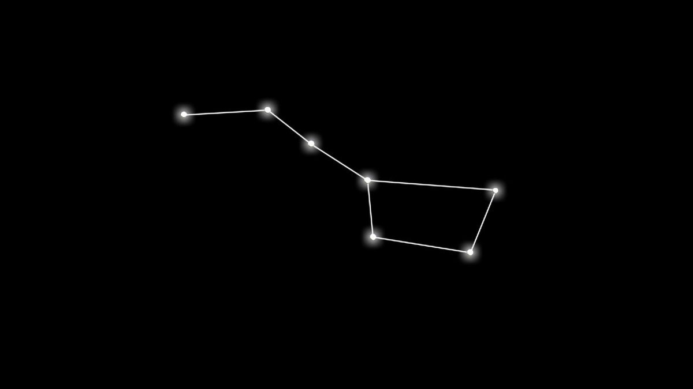
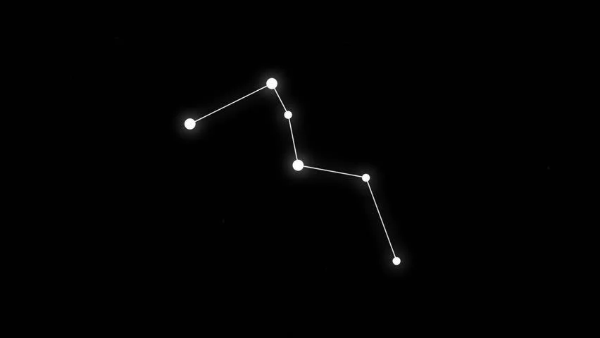
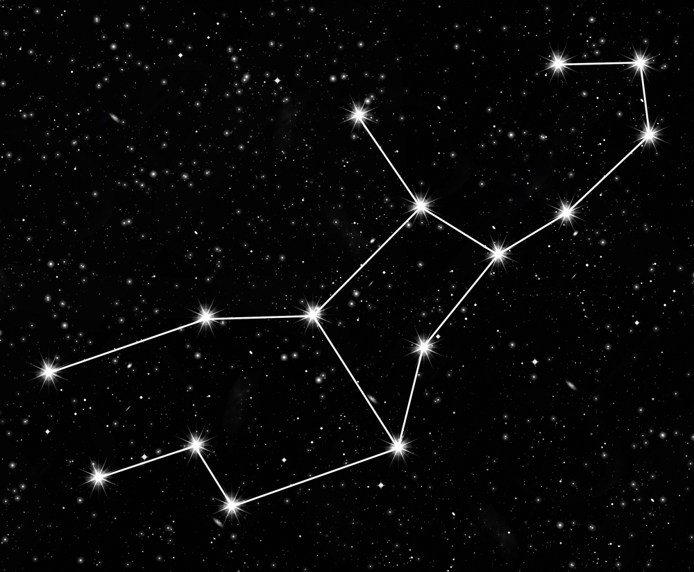
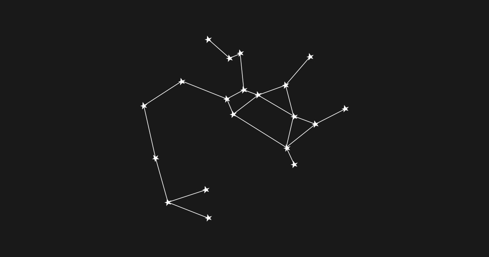

Регистрация
Вход
Krein stars
Krein stars - это проект, созданный для изучения созвездийи что они означают. Всю информацию с интернета, мы собрали тут, поэтому здесь вы сможете найти информацию о созвездиях. Надеюсь вам понравится данный проект, удачного изучения!
НАЧАТЬ
Созвездие Медведя

Большая Медведица — созвездие северного полушария неба. Семь звёзд Большой Медведицы составляют фигуру, напоминающую ковш с ручкой. Две самые яркие звезды — Алиот и Дубхе — имеют блеск 1,8 видимой звёздной величины. По двум крайним звёздам этой фигуры можно найти Полярную звезду.
Созвездие Кассиопея

Кассиопея — созвездие Северного полушария неба. Ярчайшие звёзды Кассиопеи образуют фигуру, похожую на буквы «М» или «W». Созвездие занимает на небе площадь в 598,4 квадратного градуса и содержит около 90 звёзд ярче 6m. Большая часть созвездия лежит в полосе Млечного Пути и содержит много рассеянных звёздных скоплений.
Созвездие Девы

Дева — экваториальное зодиакальное созвездие, лежащее между Львом и Весами. В созвездии Девы в Новейшее время расположена точка осеннего равноденствия. Самая яркая звезда — Спика, что на латинском значит «колос», — массивная спектральная двойная 0,98 звёздной величины. Звезда Поррима, что значит «богиня пророчеств», — одна из ближайших к нам двойных звёзд с очень вытянутой орбитой и периодом 171 год.
Созвездие Стрельца

Стрелец - одно из созвездий зодиака, расположенное в Южном небесном полушарии. Это одно из 48 созвездий, перечисленных астрономом Птолемеем, и оно остается одним из 88 современных созвездий.